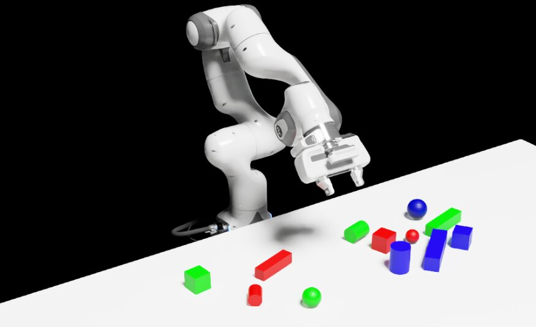
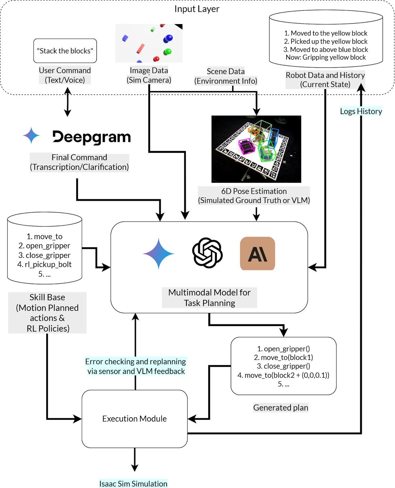
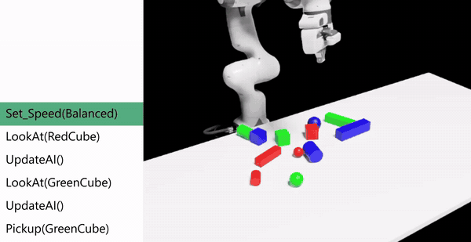
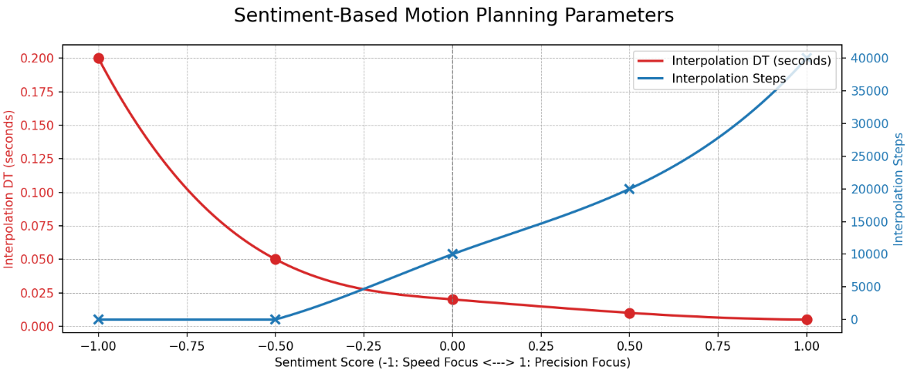
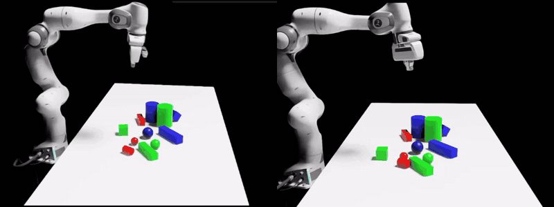
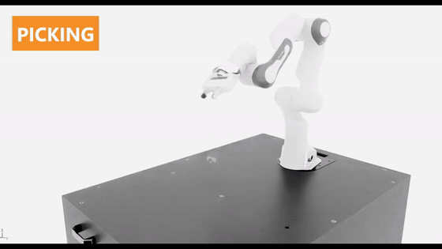
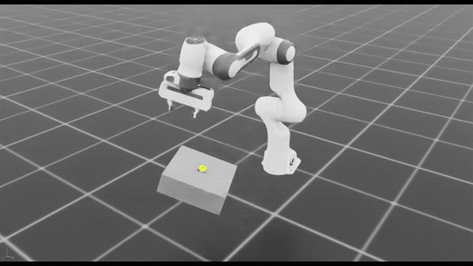
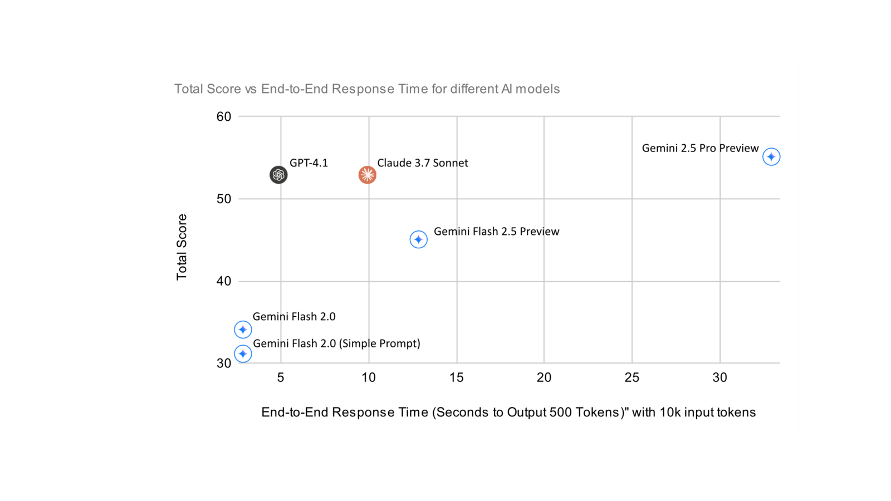
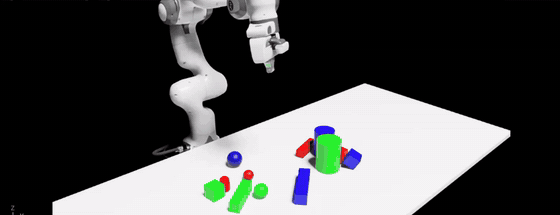
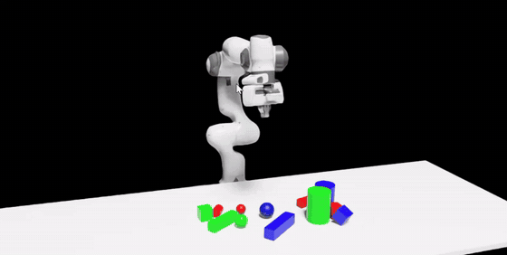

More Human Than Human
Archie McMurray · BEng Robotics, Mechatronic and Control Engineering, Loughborough University · 2025
BEng individual project. Built in NVIDIA Isaac Sim with a simulated Franka Panda; skills trained with PPO in Isaac Lab.

Motivation
Industrial robots are programmed task by task, which keeps them out of the places where a person would simply say what they want: "unscrew the bolts on this", or "carefully move the blue one to the left". Large language and vision-language models can now reason about instructions like these, but they do not move robots. This project connects the two, letting a foundation model plan from language and vision while dedicated planners and learned policies do the physical work.
How it works
A spoken or typed command (transcribed with Deepgram) is combined with a camera image, the scene state, object poses and the robot's recent history. A multimodal model (Gemini, GPT or Claude, swappable) turns this into a plan built from a library of skills. Each skill is either a collision-free motion-planned routine (cuRobo, RMPflow) or a reinforcement-learned policy. The plan runs in Isaac Sim, and errors from the simulator or from a VLM check of the result feed back to the model for replanning.


Sentiment-aware motion
Words such as "carefully" or "quickly" are scored by the planner on a speed-to-precision scale and mapped to motion planner settings, so the same skill runs faster or more precisely depending on how it was asked for.


Learned skills
Contact-rich skills were trained with PPO in Isaac Lab. The bolt pickup policy grasps, lifts and carries a bolt from a randomised 6-D pose and succeeded in 82.8% of 1000 evaluation episodes.


Evaluation
Ten commands tested different abilities, from "Pick up the green cube" and "Quickly rotate the largest cuboid 77 degrees clockwise" to "Hide the small sphere", "Build a stable tower using three different objects" and, as a closing Turing test, "Construct something beautiful". Each model's plans were scored for task comprehension, action-sequence validity and object and spatial awareness (0 to 2 each, 60 in total).
| Model | Plan score (/60) |
|---|---|
| Gemini 2.5 Pro | 55 |
| Claude 3.7 Sonnet | 53 |
| GPT-4.1 | 53 |
| Gemini 2.5 Flash (preview) | 45 |
| Gemini 2.0 Flash | 34 (31 with a simplified prompt) |

Gemini 2.5 Pro was the most reliable at spatial reasoning, handling the rotation and hiding commands correctly. GPT-4.1 and Claude produced the most creative answers to "Construct something beautiful". Executed in simulation, GPT-4.1's plans completed 6 of 10 commands; most failures came from collisions in the cluttered scene rather than from the plans themselves.


Takeaways
Frontier models already plan embodied tasks well from language and a single image, but their latency matters for real-time control, and their 3-D spatial and affordance reasoning is the weakest link. Turning good plans into reliable execution needs the same attention as the planning: collision-aware skills, perception that tolerates noise, and recovery when things go wrong.